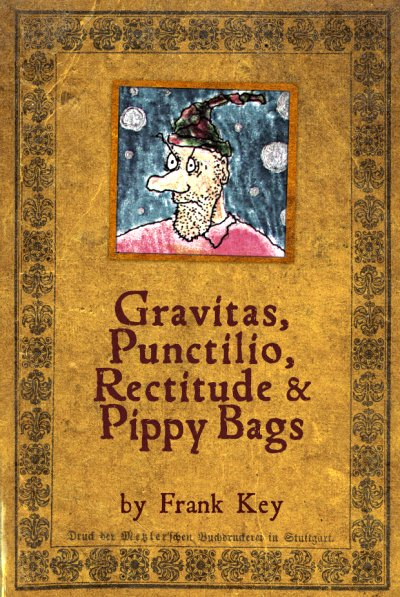

Thursday, October the 23rd, 2008
back to: title, date or indexes

“And about bloody time!” I hear you cry. At long last, after much travail, the new Hooting Yard anthology is available. Gravitas, Punctilio, Rectitude & Pippy Bags contains no fewer than a hundred and one stories eked from the pea-sized but pulsating cranium of Mr Key. 340 pages, or thereabouts, packed with common sense, with a few pictures thrown in, including that old favourite the Chumpot Patent Soap label. Now you can curl up in your exciting 60's style wickerwork seating pod, or sprawl on a lawn in a snowdrift during a winter picnic, and furrow your brow as you grapple with the exceedingly sensible doings of exceedingly sensible characters such as Dobson and Pebblehead and Tiny Enid and fictional athlete Bobnit Tivol.
Simply click on the picture to order your copy.